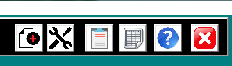
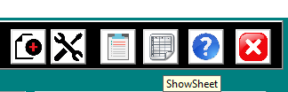
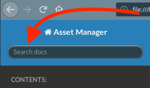

Introduction¶
Welcome to Asset Manager¶
This Excel-based utility is designed to manage non-consumable devices in Operating Theatres and Post-Op Recovery. It replaces a ledger-based approach to tracking devices. Asset Manager extends Excel through forms and code written in Visual-Basic for Applications, which is part of the Microsoft Excel product.
Each device is entered as a record on the DEVDATA spreadsheet in AssetMgr. The information for this device will include: the SAID number, the name of the device, serial and model numbers, as well as original cost and date put into service. Additionally, the record should contain the device’s status (In Service, Repair, Stored, and so forth), classification, Test-n-Tag date and associated image file, if one exists.
Devices in Asset Manager are identified by a number assigned to that device by the organisation: the SAID number. Searches for a device in the spreadsheet use this unique number.
Asset Manager tracks devices throughout their “life” in the organisation as a series of events. An event can be “In Service”, “To Repair”, “Decommissioned”, “On Loan” and “Returned”, and “Stored”. Device repair information is recorded to help build a history on a device.
Asset Manager creates a number of reports about devices and their status.
How to Best Use Help¶
While Asset Manager’s use seems pretty straight-forward to the developer, he realises that his approach to managing equipment may seem less than intuitive to other inhabitants of the solar system: hence, this Help file.
As Microsoft in their wisdom didn’t see fit to include a means to provide a very flexible custom help documentation system without installing questionable add-ons - something most security-conscious IT departments of organisations such as Queensland Health would definitely never permit - an approach had to be come up with that would provide the information quickly and accurately. Therefore, I have chosen HTML (think: Web) pages to display documentation in, using Sphinx to provide the framework. The approach to finding help in these pages depends on how the user generally searches for help, but the following is the suggested approach.
When the user clicks on the Help button, that user will be offered this help file to read. It is suggested to make use of the Quick Search feature first, entering the name of the button or control on the form the user has a question about. Help will display a number of context-specific help options.
For example, let’s say help is needed on the purpose of this button:
Moving the mouse cursor over the button will display the name of the control. Sometimes the tool-tip text will appear beneath the control instead of next to the cursor:
Make a note of this name, click on the Help button, and then, in the Quick Search field:
…type the name of the button or control and press <Enter>.
If Quick Search does not produce any results, please notify the developer.
Conventions and Glossary of Terms¶
This help file assumes certain conventions:
Physical keys you type on
- <Enter> - the Enter key, at the right side of the keyboard
- <Tab> - the Tab key, above the CapsLock key, to move from field to field
Representations in the text of screen objects to click on
- [ Close ] - represents a clickable button
- (_o_) - represents a selected radio button
- (___) - represents a deselected radio button
- [_X_] - represents a selected tick box
- [___] - represents a deselected tick box
Names of objects in a form
{kind=link}
Textbox - allows entry of free text. Some text boxes automatically convert text to upper-case. Example shown: the SAID field on the “Add or Edit Equipment” form.
{kind=link}
Dropdown - Also known as a “Combobox”, it appears to be a textbox with a down-arrow on the right-hand side. Contains a listbox of selectable items, but will also allow keyboard entry of text. Example shown: the DeviceType dropdown on the “Add or Edit Equipment” form.
{kind=link}
Tickbox - acts as a toggle to turn a condition on or off. Example shown: the New Event tickbox on the “Add or Edit Equipment” form.
{kind=link}
Radio button - used to select one - and only one - of several choices. Example shown: the Device Status radio-buttons on the “Add or Edit Equipment” form.
{kind=link}
Toggle - turns a condition on or off. In this example from the “Equipment Management” form, the “All” toggle, when depressed, displays devices from all locations whilst displaying a Location column in the Devices List, with the Location/Owner dropdown empty and disabled. When the “All” toggle is not depressed, the Owner/Location dropdown is enabled, and a Location displays in the dropdown, with all devices of that type and in that location displaying in the Devices listbox.
{kind=link}
Listbox - contains a list of items or list of information on an item. Example shown: the Devices List on the “Equipment Management” form.
{kind=link}